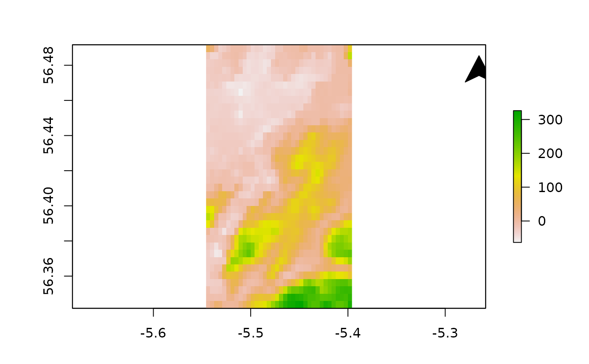
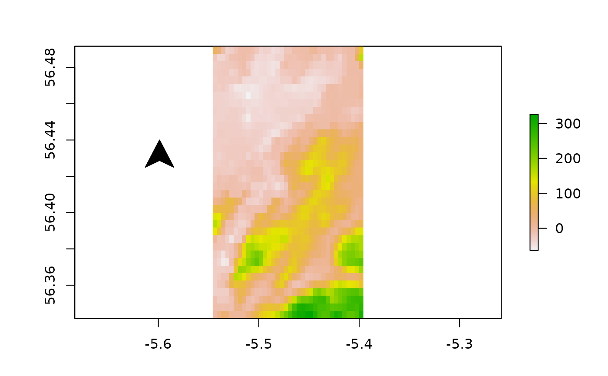
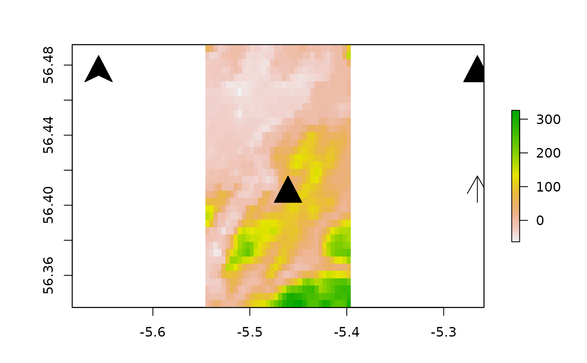
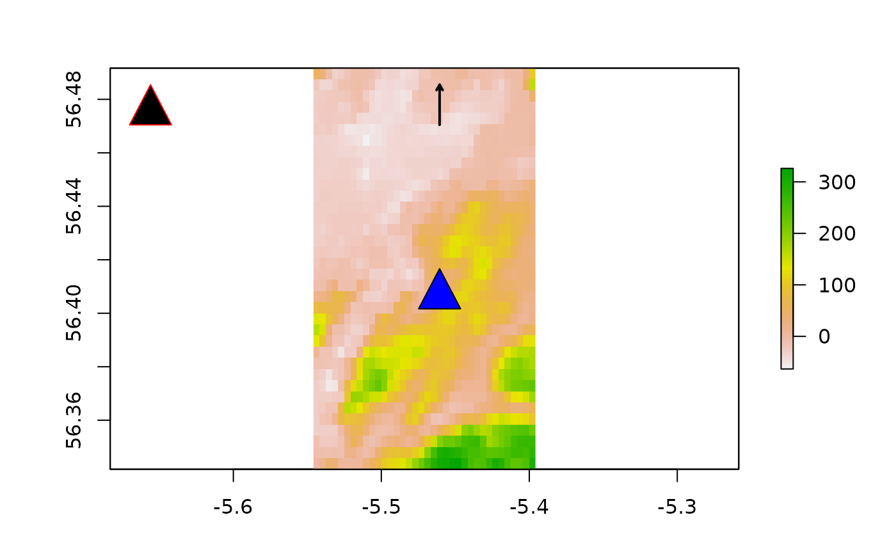
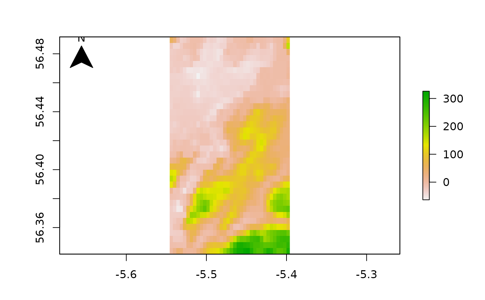
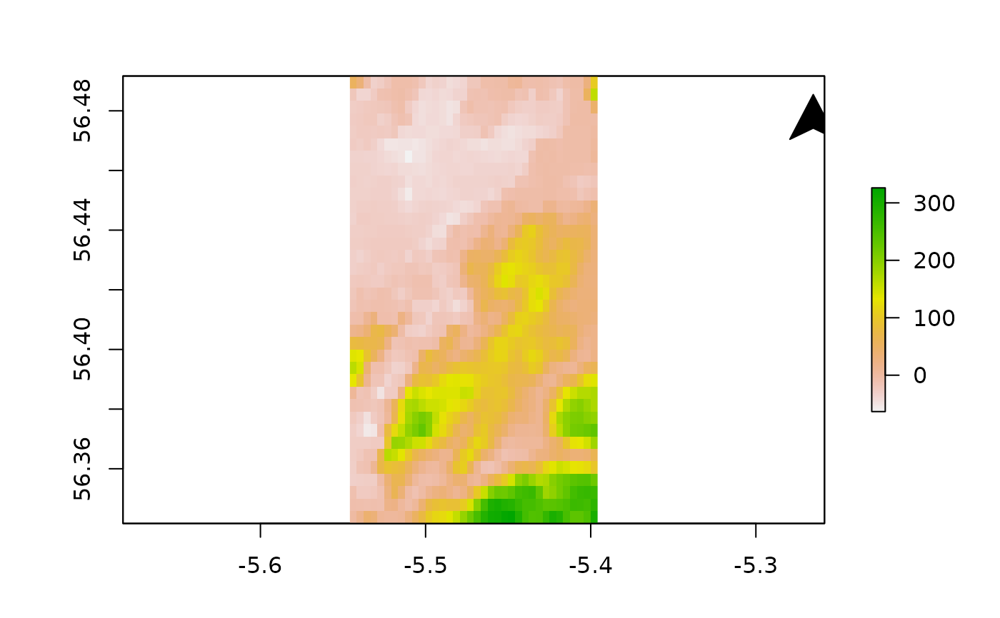
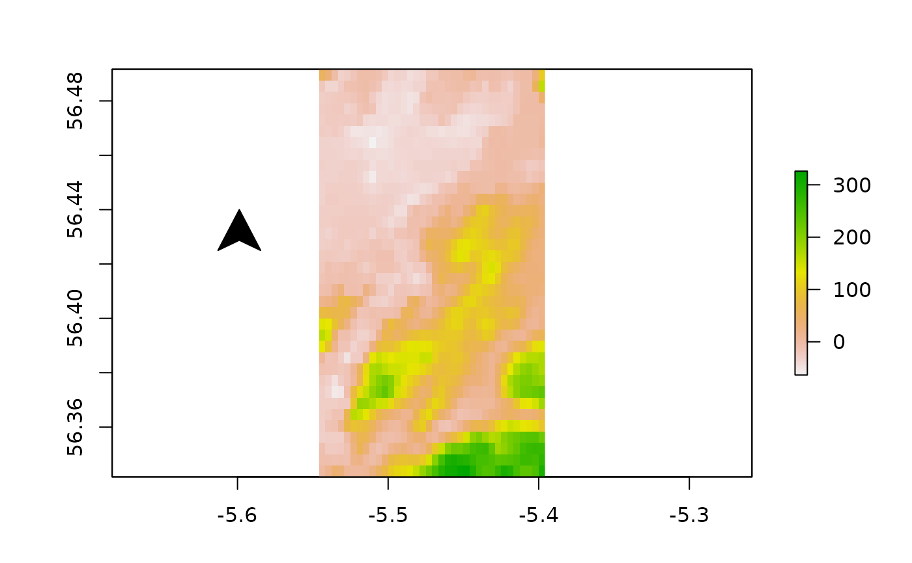
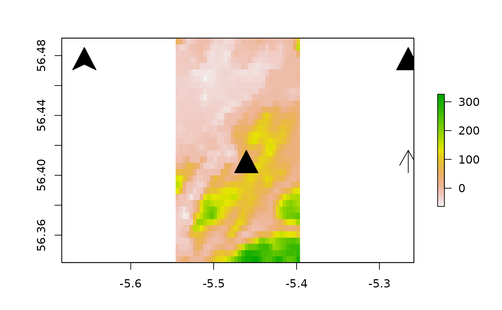
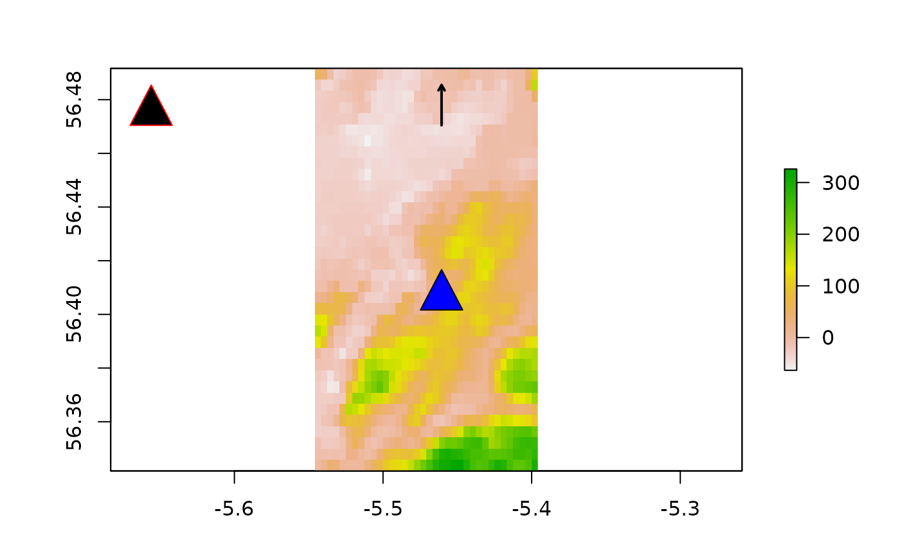
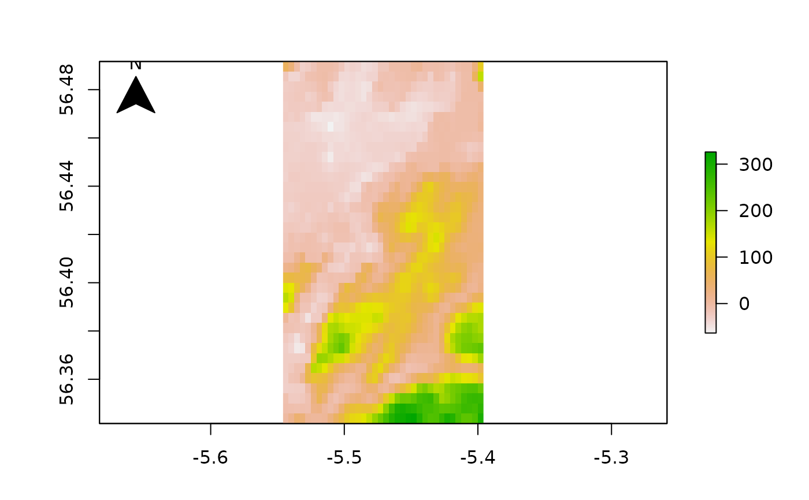

This function adds a North arrow to a map.
add_north_arrow(
x0 = "topleft",
y0 = NULL,
width,
mid,
height,
type = c("filled head", "filled triangle", "arrow"),
add_label = NULL,
col = "black",
...
)Arguments
- x0, y0
A character keyword or doubles that define the arrow's position (see
xy.coords).- width, mid, height
Arrow shape controls. Each argument accepts a double that defines the arrow
width,mid-point orheight.midis only used fortype = "filled head".- type
A character string that defines the arrow type. Currently supported options are (a)
"filled head", which adds a (filled) arrow head (viapolygon); (b)"filled triangle", which adds a (filled) triangle (viapolygon); and (c)"arrow", which adds an arrow (viaarrows).- add_label
A named list, passed to
text, to add a label to the plot.add_label = NULLsuppresses this option,add_label = list()implements default options and a named list customises these.- col, ...
Additional graphical parameters passed to
polygonorarrows.
Value
The function adds an arrow to a map and invisibly returns a named list with the x and y coordinates of the arrow (derived from x0, y0, width, mid and height as applicable).
Details
Future functionality should include the capacity to control the tilt of the arrow (which is currently vertical) and to add north and east arrows that act as scale bars.
Examples
#### Example (1): Implement function using the default options
raster::plot(dat_gebco)
add_north_arrow()
 #### Example (2): Adjust arrow location
raster::plot(dat_gebco)
add_north_arrow(x0 = "topright")

raster::plot(dat_gebco)
add_north_arrow(x0 = -5.55, y = 56.44)

#### Example (3): Adjust arrow type
raster::plot(dat_gebco)
add_north_arrow("topleft")
add_north_arrow("topright", type = "filled triangle")
add_north_arrow("center", type = "filled triangle")
add_north_arrow("right", type = "arrow")

#### Example (4): Adjust arrow type parameters
raster::plot(dat_gebco)
add_north_arrow("topleft", type = "filled triangle", border = "red")
add_north_arrow("center", type = "filled triangle", col = "blue")
add_north_arrow("top", type = "arrow", length = 0.05, lwd = 2)

#### Example (5): Add arrow label
raster::plot(dat_gebco)
add_north_arrow(add_label = list())

#### Example (2): Adjust arrow location
raster::plot(dat_gebco)
add_north_arrow(x0 = "topright")

raster::plot(dat_gebco)
add_north_arrow(x0 = -5.55, y = 56.44)

#### Example (3): Adjust arrow type
raster::plot(dat_gebco)
add_north_arrow("topleft")
add_north_arrow("topright", type = "filled triangle")
add_north_arrow("center", type = "filled triangle")
add_north_arrow("right", type = "arrow")

#### Example (4): Adjust arrow type parameters
raster::plot(dat_gebco)
add_north_arrow("topleft", type = "filled triangle", border = "red")
add_north_arrow("center", type = "filled triangle", col = "blue")
add_north_arrow("top", type = "arrow", length = 0.05, lwd = 2)

#### Example (5): Add arrow label
raster::plot(dat_gebco)
add_north_arrow(add_label = list())
